[Ubuntu] テーマ(Arc)を変更する方法(tweak)
こんにちは。明月です。
筆者は貧しいデベロッパーなのでWindowOSよりUbuntuをよく使っています。Windowは高いですが、Ubuntuは無料だからですね。
でも、Ubuntuが貧しい人が使うものではないです。もちろん、WindowよりUbuntuを好きなマニアックも多いです。
Macはどうかな。。Macは高いですね。筆者が考えてMacよりWindowがアプリも多いし、Macが楽なことはよくしりません。それは人によって違うですね。
Ubuntuを初めて使う時には基本テーマが綺麗ではないですね。少しやぼったいかな。
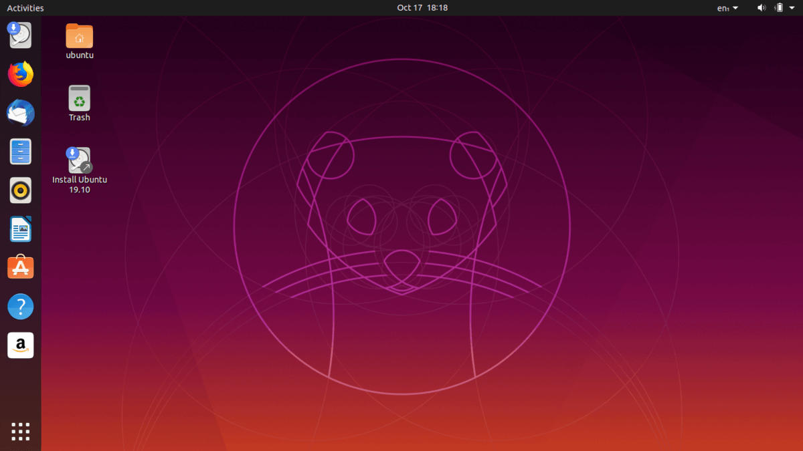
でもUbuntuの特徴の一つがUIテーマを変更ができることです。
筆者は別に気になるテーマがあることではありません。ただ、Googleを検索して一番人気があるものを選択してインストールして使いますね。
今の経験でそのほうが一番満足だったんです。
link - https://www.omgubuntu.co.uk/2017/11/best-gtk-themes-for-ubuntu
上のリンクで人気テーマを検索するとArcテーマが一位でよく使うと書いています。
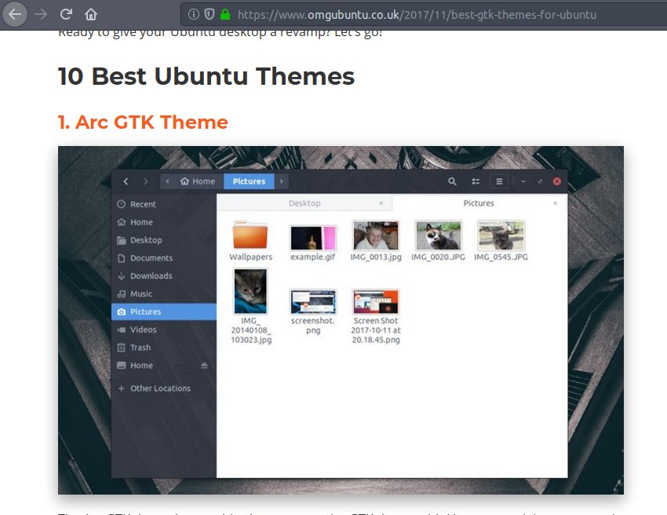
上のサイトは信用性が高いチャートや特別なサイトではなく、ただGoogle検索で一番上で表示されたサイトです。筆者が使うのはどのテーマが一位かが重要ではなく、Arcデザインがいいし、そのサイトでただ１位だったという参照だけです。
先、テーマをインストールするようには「tweak」と言うプログラムがインストールされなければならないです。
sudo apt-get install gnome-tweak-tool
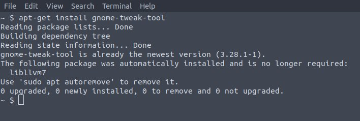
私の場合は「tweak」というプログラムはもうインストールされています。
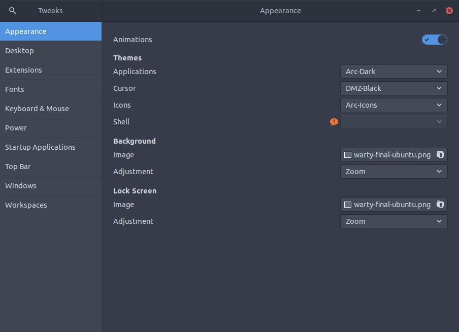
そしてターミナルでターマをダウンロードしましょう。
##テーマダウンロード
sudo add-apt-repository ppa:noobslab/themes
sudo apt-get update
sudo apt-get install arc-theme
##アイコンダウンロード
sudo add-apt-repository ppa:noobslab/icons
sudo apt-get update
sudo apt-get install arc-icons
link - https://www.ubuntupit.com/install-arc-theme-icon-ubuntu-fedora-linux-desktop/
ダウンロードが完了されるとapplicationsとiconにArcの語頭が付けているテーマがあることを確認できます。筆者の場合は「Arc-Dark」が気になって選択しました。
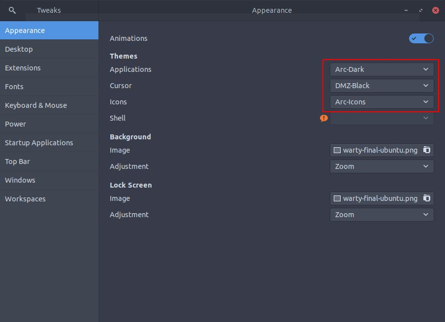
そしてshellとdockerのテーマも変更しましょう。
gnomeのShell拡張をターミナルでインストールしましょう。
sudo apt-get install gnome-shell-extensions
firefoxで下記のサイトを接続しましょう。
link - https://extensions.gnome.org/
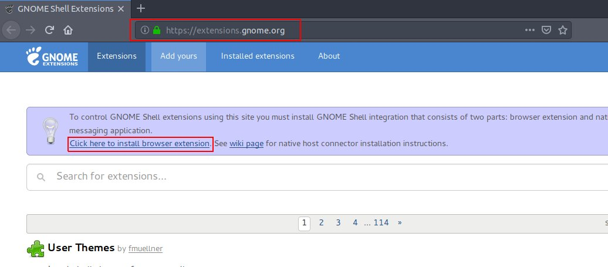
そして確認add-onをインストールしましょう。
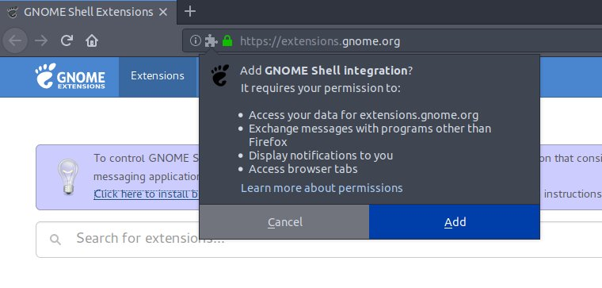
このサイトはgnom(UbuntuのグラフィックユーザインタフェースのOS(GUI))の拡張が可能なウィジェットがあるサイトです。テーマを変わるように必要なウィジェットは３つです。
メインリストで見えないと別々に検索すればでます。
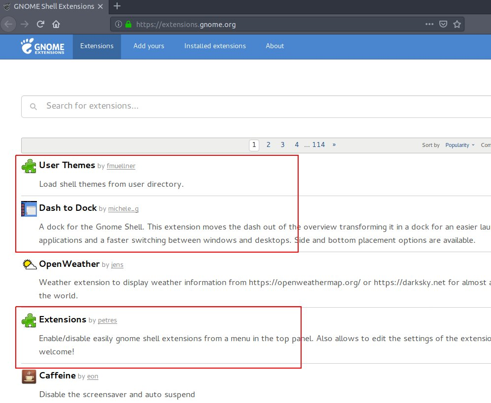
インストールはウィジェットのページで上左に「off/on」のボタンがありますがそれを「on」にすればインストールします。
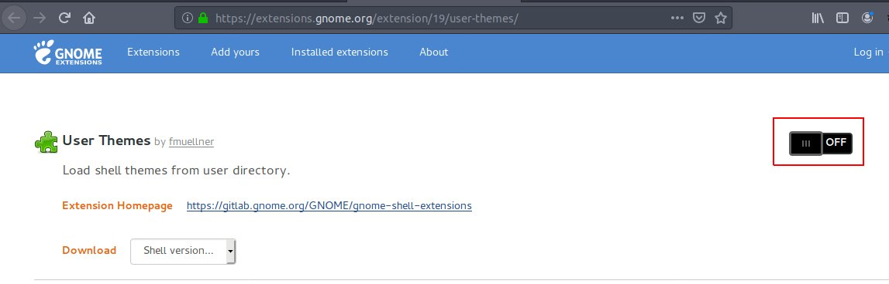
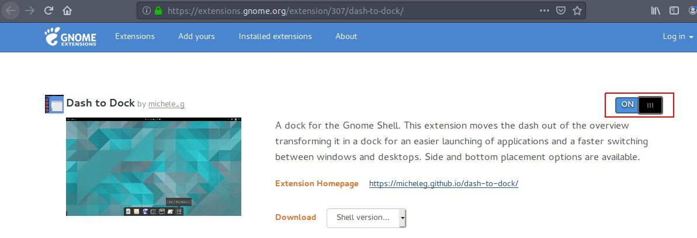
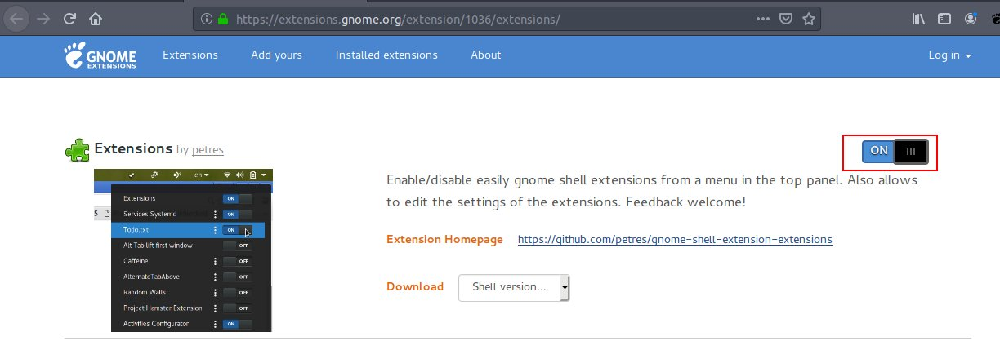
また、tweakのプログラムを実行するとShellの部分でビックリマークがなくなって設定できるようにドロップダウンがでます。(もしなければ、tweakプログラムを終了して再実行するとできます。)
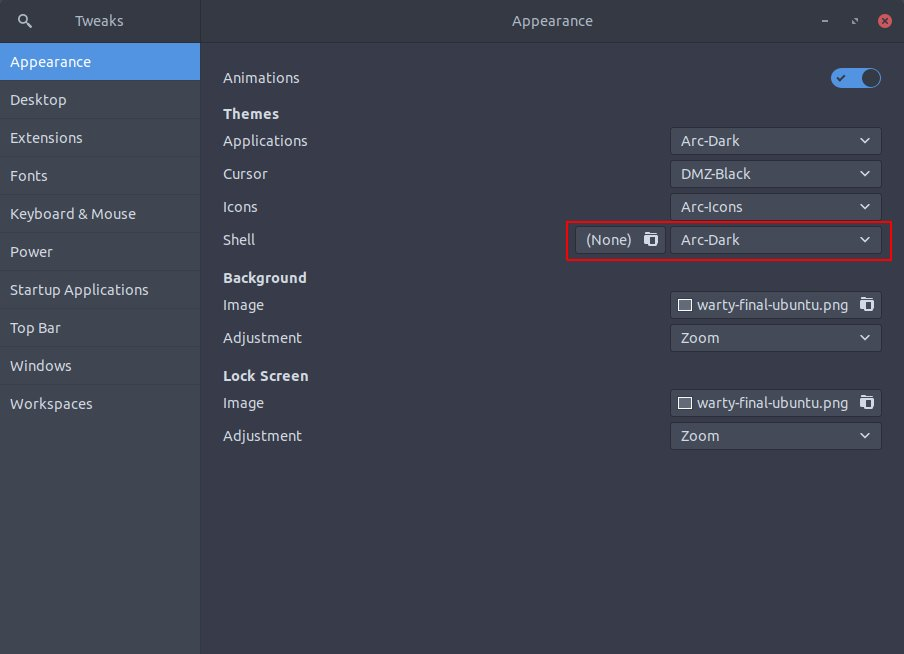
筆者の場合はshellも「Arc-dark」で設定しました。上のshellのテーマが変わったことを確認できます。
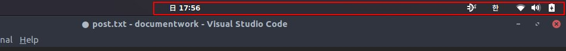
そしてExtensionsタブに移動してDash to dockの画面に移動しましょう。
DockをBottomで設定してautohideをoffにしましょう。onにしたい方はそのままにおいてもいいですが、なんかバグがあるかなたまに反応しない時がありますね。
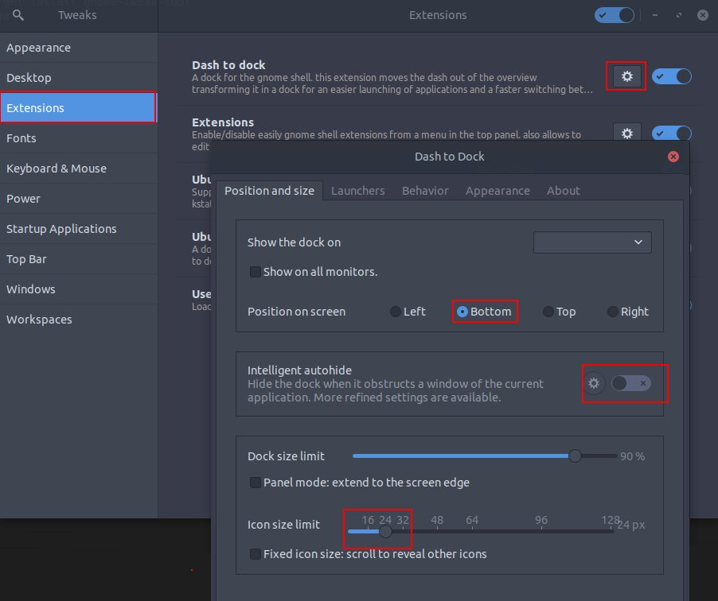
そしてiconサイズは画面によって変更すればよいです。個人的に「24」の設定がいいです。
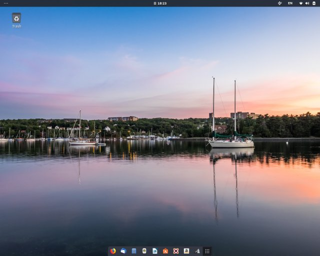
そしてAppearanceタブのShrink the dashをチェックしましょう。
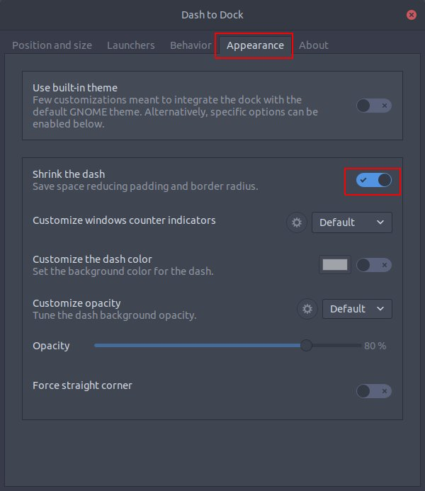
完成になりました。
Ubuntuはこんなにテーマを自由に変更ができるのでよいです。探したらマックのスタイルのMacbuntuもあります。マックスタイルを好きなかたはそれを使ったらよいですね。
- [Ubuntu] PHPをインストール、Composer設定する方法2019/11/13 07:32:21
- [Ubuntu] テーマ(Arc)を変更する方法(tweak)2019/11/12 07:32:13
- [Ubuntu] Apache2をインストールする方法2019/11/11 07:28:28
- [Ubuntu] 「acquire the dpkg frontend lock」のエラーを解決方法2019/11/10 22:19:34
- [Ubuntu] JavaインストールとEclipseをインストールする方法2019/11/08 07:29:55
- [Ubuntu] MariaDB(Mysql)をインストールする方法2019/11/07 07:50:58
- [Ubuntu] Chromeをインストールする方法2019/11/06 19:48:19
- [CentOS] YUMについて、YUMが出来ない場合処理方法2019/11/05 07:17:58
- [CentOS] MariaDB(Mysql)をインストール2019/11/04 18:35:10
- [CentOS] FTPインストールする方法(vsftpd)2019/11/01 07:29:57
- [CentOS] SAMBAインストール方法2019/10/30 07:38:57
- [CentOS] PHPインストールする方法2019/10/29 20:09:03
- [CentOS] ApacheとTomcatの連携2019/10/29 07:28:33
- [CentOS] Tomcat インストール方法2019/10/28 22:38:56
- [CentOS] Java インストール2019/10/28 00:22:32
- [Java] JSPのSpring環境でschedulerのcronを使う方法2020/03/18 00:24:32
- [Java] POIを利用してExcelを扱う方法2020/03/17 01:48:00
- [Java] PDFを出力する方法(itextpdf)2020/03/13 00:47:31
- [Java] ログライブラリ(log4j)を使う方法2020/03/12 00:54:39
- [Java] Jsonタイプのデータを使う方法(Gsonライブラリ)2020/03/11 00:30:15
- [Java] Base64にエンコード、デコードする方法2020/03/09 10:24:01
- [Java] cmdコマンドを実行するための方法2020/03/06 18:01:10
- [Java] メール(javax.mail)を発送する方法2020/03/05 20:07:49
- [Java] クラス複製(Clonable, Reflection)2020/03/05 00:03:19
- [Java] シリアライズ(直列化: Serializable)2020/03/03 00:03:33
- [Java] StringBuilderとStringBufferの差異2020/03/02 07:52:22
- [Java] Compare関数を使う方法2020/02/29 03:00:00
- [Java] 数字フォーマット(お金表示及び小数点以下表示)2020/02/28 03:00:00
- [Java] サーブレット環境で現在の実行ディレクトリを取得する方法2020/02/27 03:00:00
- [Java] 日本語をユニコードに変換して、ユニコードから日本語に変換する方法2020/02/26 03:00:00